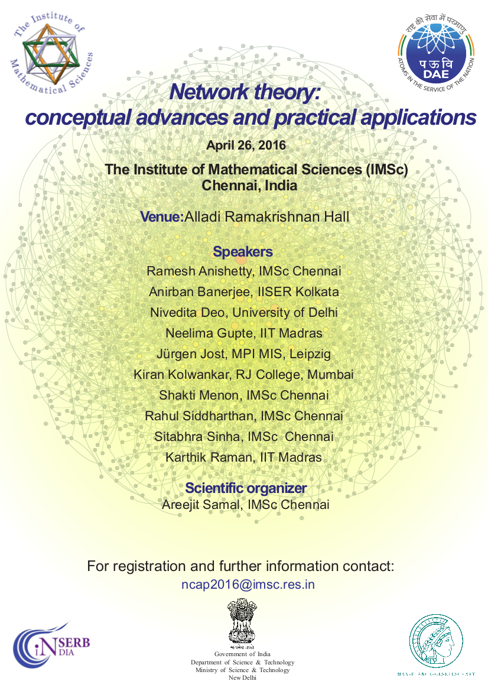

Leveraging Data Science to Characterize Plastic Exposome

Organizer. 23 November 2024, IMSc, Chennai


Network theory: conceptual advances and practical applications

Organizer. 26 April 2016, IMSc, Chennai
Organizer. 23 November 2024, IMSc, Chennai
Organizer. 26 April 2016, IMSc, Chennai